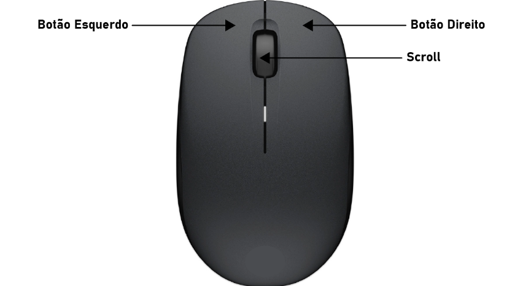

O Computador
O que é um computador Software e Hardware Gabinete e Periféricos Processador Placa Mãe Disco Rígido e Disco Sólido Memória RAMIntrodução ao Windows
Um pouco de História O Conceito de Janela Área de Trabalho Mouse Barra de Tarefas e Menu Iniciar Configurações do Windows Explorador de Arquivos Teclado Unidades de Armazenamento Acessórios do Windows Manipulando TextosIntrodução à Internet
Microsoft Edge Pesquisa na Web Download de Arquivos Download de Aplicativos e Programas Google Conta Microsoft Sites Úteis Cache e CookiesIntrodução ao Office
Microsoft Word Microsoft PowerPoint Microsoft Excel Microsoft PublisherIntrodução à Informática Avançada
Esteja protegido Senhas Serviços de Nuvem Instalação e Desinstalação de Aplicativos Microsoft Defender Gerenciador de Tarefas Saúde do Computador Limpeza de Disco Verificação de Disco Verificação de Arquivos Modo de Segurança Restauração, Backup e FormataçãoO Sistema Operacional
A Pasta Raiz Log de Eventos Serviços Drivers e Dispositivos Agendador de Tarefas Gerenciamento de Disco Microsoft PowerShell Rede e CompartilhamentoPróximos Passos
Próximos passos Desenvolvimento de Software Design Gráfico Software LivreO Autor
O AutorO mouse é um dispositivo apontador fundamental para a utilização de um computador. A maioria dos mouses possui três botões, sendo um botão esquerdo, LMB (Left Mouse Button), um botão direito, RMB (Right Mouse Button) e um botão central rolante, a Scroll.
O botão esquerdo do mouse é o botão de seleção, ou botão acionador, com ele clicamos em links, abrimos pastas e arquivos, selecionamos objetos entre outras coisas, o botão esquerdo tem quatro funções:
Simples do Botão Esquerdo: O clique comum, ou clique simples é usado para selecionar objetos ou entrar em páginas de internet. No explorador de arquivos, um clique simples seleciona uma pasta ou arquivo, em menus o clique simples acessa uma opção.
Duplo do Botão Esquerdo: O clique duplo é o ato de clicar duas vezes rapidamente com o botão esquerdo, é usado para abrir arquivos e pastas, mas outros programas podem configurar funções diferentes para o clique duplo do mouse.
Triplo do Botão Esquerdo: Apesar de raro, o clique triplo é utilizado em alguns programas, geralmente para selecionar toda uma coleção de objetos onde um clique duplo seleciona um dos objetos na coleção. Por exemplo, no Word um clique simples posiciona o cursor no meio de uma palavra, um clique duplo seleciona a palavra inteira, e o clique triplo seleciona todo o parágrafo.
Arraste do Botão Esquerdo: O arraste do botão esquerdo do mouse, também chamado de arrastar e soltar, é uma função usada para mover objetos de um lugar para o outro, consistem em clicar, segurar o botão ainda clicado, levar o mouse até outro lugar da tela e então soltar o botão. Essa função é usada para desenhar em programas gráficos e selecionar textos e objetos em diversos editores.
O botão direito do mouse, também chamado de Botão Auxiliar, na maioria dos programas tem a função de menu, quando clicado exibe certa quantidade de opções relativas ao programa ou pasta em questão. Em alguns programas esse botão pode possuir função de arraste.
A scroll, também chamada de roda do mouse, ou botão do meio é usada para rolar, ou seja, subir e descer entre páginas, e em muitos casos também para aumentar ou diminuir o zoom em uma tela. A Scroll possui quatro funções:
Giro da Scroll: O giro da Scroll consiste em puxá-la para trás ou empurrá-la para frente e é usado para descer ou subir em páginas e aumentar ou diminuir o zoom em telas.
Clique da Scroll: O clique da Scroll é configurado de forma diferente em diferentes programas, pode ser usado para mover a tela, fechar páginas entre outras funções.
Arraste: Em softwares gráficos e editores a Scroll também tem a função de arrastar e soltar, essa função costuma ser usada para mover a tela.
Clique Duplo da Scroll: Apesar de raro, em alguns editores a Scroll também possui função de clique duplo, que geralmente é usada para dar um zoom em todos os objetos presentes na tela.